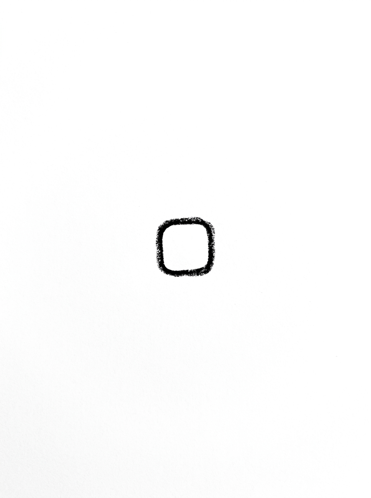
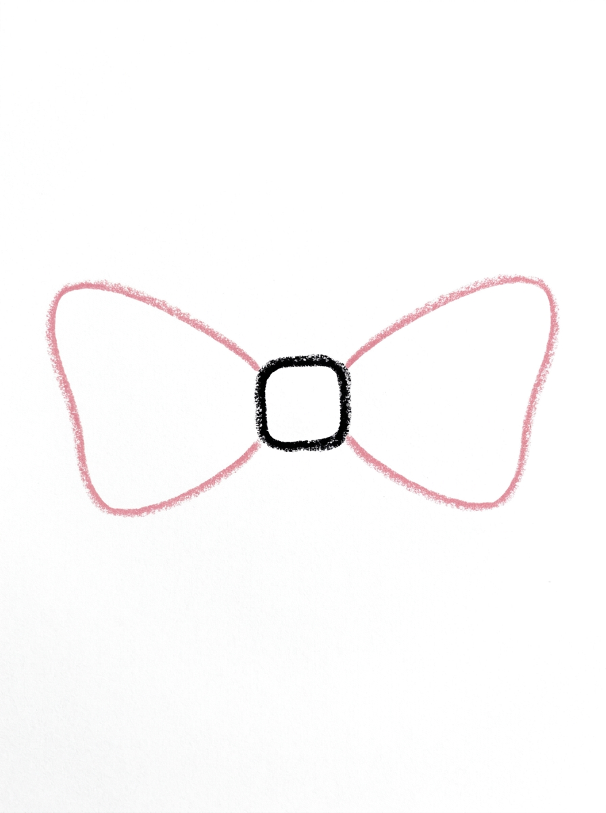
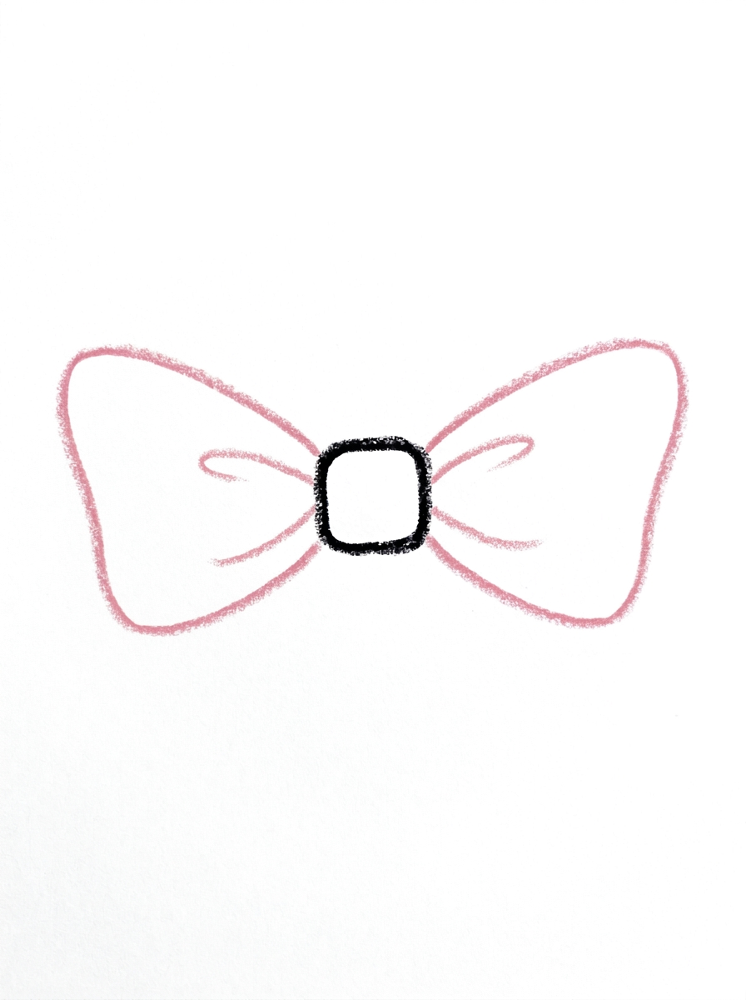
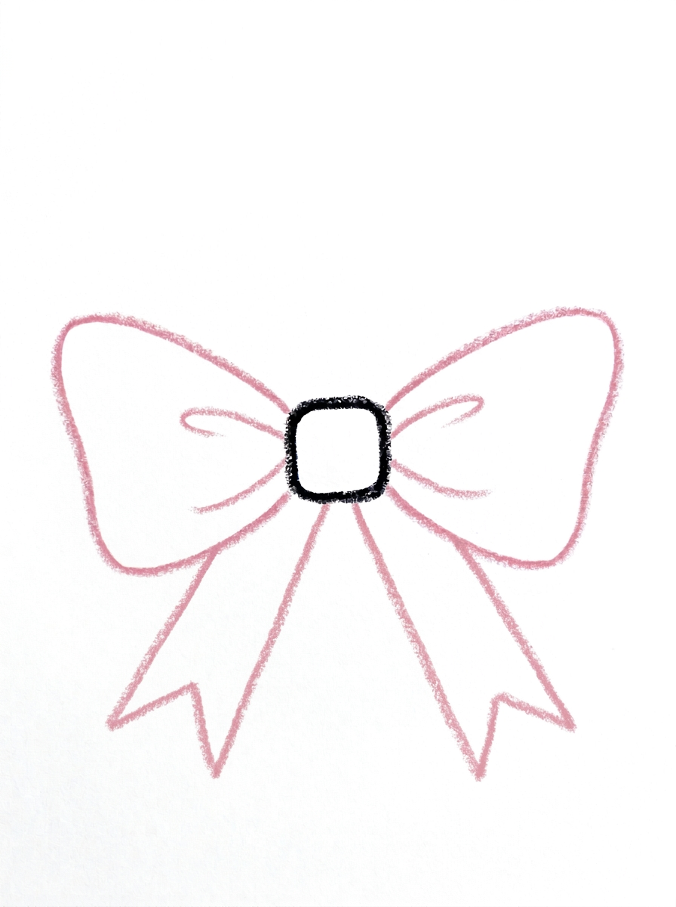
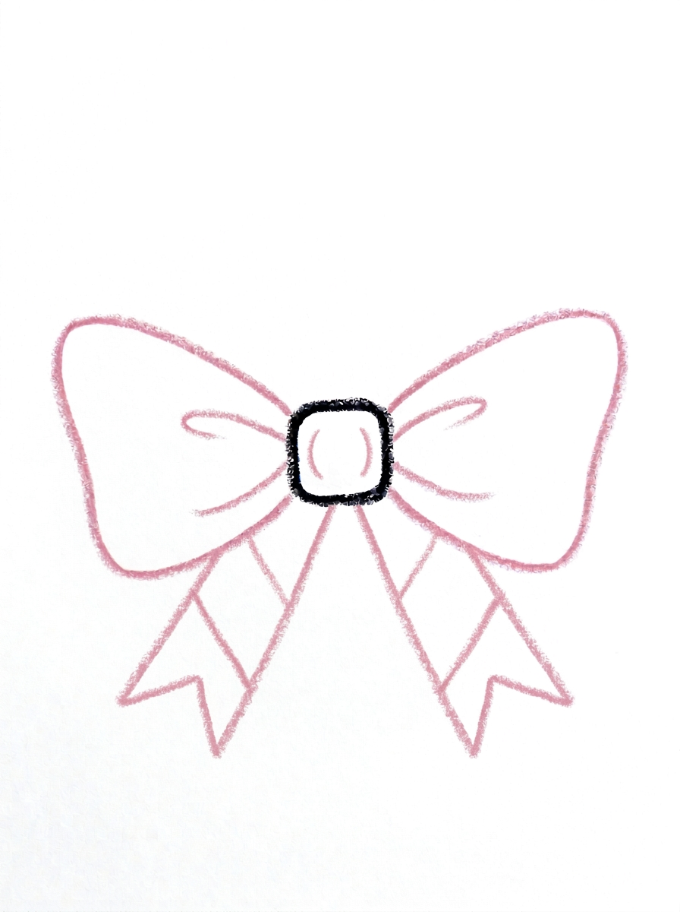

Bow Drawing for Kids How to Draw A Bow in 6 Easy Steps
Quick Answer
Draw a bow in six easy steps: start with one rounded square knot, sweep a loop from its top corner to its bottom corner on each side, add a fold line in each loop, hang two V-notched tails underneath, finish with lines, then color it pink. Made for ages 3 and up — no signup needed, just print and draw.
At a Glance
- Subject: How to draw a bow
- Ages: 3+
- Steps: 6 steps
- Time: ~15 min
- Difficulty: Easy
- Supplies: Paper, crayons
A bow looks fancy, but it is really just folded ribbon — and this tutorial draws it the way a real bow is made. A little square knot in the middle, two wide loops that hold onto the knot's corners, and two tails with snipped V ends turn into the kind of bow kids want on every present, ponytail, and teddy bear they draw.
✏️ Draw Your Bow in 6 Easy Steps
One step per box — this step by step bow drawing shows each new part in a different color so kids can see exactly what changed.
Step 1: The Knot

Draw one small square with nice round corners in the middle of your paper. This square is the knot in the middle of your bow.
Step 2: The Two Loops

Draw the loops like folded ribbon: from the TOP corner of the knot, sweep a line out wide to the side and around, and come back to the BOTTOM corner of the knot. Do the same on the other side. Each loop is a wide wing that holds the knot between its top and bottom corners.
Step 3: The Inside Lines

Draw one curved line inside each loop, starting near the knot's top corner and ending near its bottom corner. These lines show how the ribbon folds.
Step 4: The Ribbon Tails

Draw two ribbon tails hanging under the knot, starting at its bottom corners — one going down to the left and one going down to the right. Cut a little V shape into the bottom of each tail.
Step 5: The Finishing Lines

Draw two lines across each ribbon tail, and two small curved lines on the knot — one near its left edge and one near its right edge.
Step 6: Color It In

Color the whole bow rose pink, make the folds and the tails a deeper pink, and color the middle knot deep magenta pink. Lovely!
📊 Bow Drawing by Age
Every age can join in — just adjust the job.
| Age | What they can do | Tip |
|---|---|---|
| 3-4 | Draw the rounded square knot and color the finished bow pink. | Keep the knot small and centered — the loops and tails all measure themselves against it. |
| 4-5 | Sweep the two wide loops from the knot's top corners back to its bottom corners. | Say it as a rhyme while they draw: out from the top, around, and home to the bottom. |
| 6+ | Complete all six steps, including the fold lines, V-notched tails, and finishing lines. | Let them design bows in different sizes and color pairs once the first one lands. |
🖨️ Download Your Free Bow Drawing Printable
The printable lays out all 6 steps one per box, big enough for little hands — kids draw right alongside each step.
⬇️ Open Free Printable 🖨️ Print🎁 Free printable for ages 3+
🎀 Bow-Topped Gift Wrap
Put the bow to work: draw a big square present under it, with the bow sitting right on top where it belongs, then add ribbon lines running down the box from under the knot. Now design the wrapping paper too — stripes, dots, or tiny stars — and color the whole gift. Kids can draw a stack of three presents with a different-sized bow on each, smallest bow for the smallest box.
What You'll Need to Draw A Bow
All you need is a pencil, an eraser, and the printed tutorial page showing all six steps. For coloring, rose pink covers the loops, a deeper pink shades the folds and tails, and deep magenta pink makes the knot stand out in the middle. A gold or silver crayon is a fun extra for drawing a shiny party bow.
What They're Learning
This tutorial teaches how a real ribbon bow is constructed: loops that attach at the knot's top and bottom corners, fold lines that show the ribbon bending, and tails with V-shaped ends. Kids practice sweeping curved lines that start and finish at exact points — real hand control — plus symmetry, since each loop, fold, and tail mirrors the one on the other side.
Make It Yours
Draw a tiny bow for a teddy bear's ear and a giant bow filling the whole page, or a hair bow sitting on a simple circle head. Kids can stripe the tails, dot the loops, or color a red bow for holidays and a gold bow for birthdays. Two bows tied at the ends of two braids — just curving lines down from a circle head — make a favorite portrait detail.
🛒 Our Favorite Drawing Supplies
These are the supplies we reach for in our own home — washable (because kids), quality paper, and enough colors to avoid fights.
As an Amazon Associate, MomYouNeedThis earns from qualifying purchases — at no extra cost to you.
💡 Bow Drawing Tips for Parents
Step two is the whole secret of this bow: each loop starts at the knot's TOP corner, sweeps out wide, and comes back to its BOTTOM corner — never to the middle of the knot's side. Loops that pinch into the middle of the square are what make a bow look squished. If that happens, erase just the loop and re-sweep it corner to corner; the wide wing shape appears immediately.
Keep both loops wide and about the same size, like two wings. A quick check before moving on: the knot should peek out between the loops, held at its four corners, and the bow should look balanced enough to sit on a present. Slight wobbles are fine — fabric is soft, and a slightly lopsided bow still reads perfectly.
✏️ Bow Drawing Step by Step
A step by step bow drawing succeeds because it treats the bow as fabric, not as a symbol. Instead of two triangles and a circle, kids build the bow the way ribbon actually folds: knot first, then loops that grip the knot's corners, then tails hanging underneath.
That construction order means every step has a physical logic a child can follow. The fold lines in step three only make sense once the loops exist, and the tails in step four hang from the knot's bottom corners because that is where real ribbon ends fall.
Checking the bow after each step is quick: is the knot still visible in the middle, and do both sides match? Six small checks later, the bow looks like something tied by hand.
See free bow printable for more.
✏️ One Shape Per Step, Six Steps Total
Step one is the knot: one small square with rounded corners in the middle of the paper. Step two draws the loops like folded ribbon — from the top corner of the knot, a line sweeps out wide to the side and around, coming back to the bottom corner, and the same again on the other side.
Step three adds one curved line inside each loop, from near the knot's top corner to near its bottom corner, showing how the ribbon folds. Step four hangs two ribbon tails under the knot from its bottom corners, one down to the left and one down to the right, each with a little V cut into its bottom.
Step five adds the finishing lines: two lines across each tail and two small curved lines on the knot, one near each edge. Step six colors the bow rose pink, the folds and tails a deeper pink, and the knot deep magenta pink.
See free bow printable for more.
🎀 A Bow for Everything
Once a child can draw this bow, it starts appearing everywhere — and that is a good thing. Bows finish drawings the way they finish real gifts: on top of presents, in the hair of every portrait, around a bouquet, and on a kite's tail.
Scaling the bow is the natural next skill. A small one-inch version decorates a teddy bear, the standard size tops a present, and a page-filling giant bow becomes a picture in its own right, especially with striped tails and dotted loops.
Because the construction never changes — knot, corner-to-corner loops, fold lines, tails — kids can resize and recolor it confidently without relearning anything, which is exactly what makes it a keeper tutorial.
See free bow printable for more.
❓ Bow Drawing FAQs
What is the easiest way to draw a bow for kids?
Draw a small rounded square for the knot, then sweep one wide loop from its top corner back to its bottom corner on each side. Add a fold line in each loop, two tails with V-shaped ends underneath, and color it pink.
What age is this bow drawing for?
It is made for ages 3 and up. Younger kids can draw the knot and color, while older kids can manage the corner-to-corner loops and finishing lines themselves.
What supplies do we need?
Just a pencil, an eraser, and crayons or markers — rose pink, a deeper pink, and a deep magenta pink match the example.
Is the printable really free?
Yes — every printable on MomYouNeedThis is 100% free to download and print. No signup, no payment, just tap the download button.
How do I print the bow tutorial?
Print at 100% scale, not 'fit to page', so the step pictures stay their true size. Regular letter paper works perfectly.
Why do the loops start at the corners of the square?
Because that is how a real ribbon bow is made — the loops are folds of fabric held by the knot at its top and bottom corners. Corner-to-corner loops give the bow its wide, full shape instead of a pinched one.
What if the loops come out different sizes?
A slightly uneven bow still looks like soft fabric, so it is rarely worth restarting. If one loop is much smaller, erase just that loop and re-sweep it wider, matching the other side.
Can we draw this bow on a present or in someone's hair?
Yes — that is its best use. Draw the bow at the top of a square for a gift, or at the top corner of a circle head for a hair bow, using the exact same six steps at any size.
📚 Keep Exploring
- ✏️ All 53 Drawing Tutorials 53 free step-by-step drawing tutorials for kids.
- 🎀 Cute Coloring Free cute coloring pages for kids.
- ✏️ Drawing Practice Free printable drawing pre-writing worksheet for toddlers.